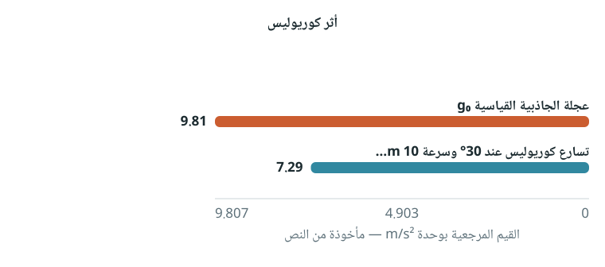

أثر كوريوليس
Coriolis effect
أثر كوريوليس هو انحراف ظاهري في مسار الأجسام المتحركة فوق سطح دوّار، ناتج عن دوران الأرض، ومقداره يتناسب مع سرعة الجسم وجيب خط العرض، ويُدوّر الرياح يميناً في نصف الكرة الشمالي ويساراً في الجنوبي.
أثر كوريوليس ليس قوة حقيقية بل قوة ظاهرية تظهر في الإطار المرجعي الدوّار. فالأرض تدور، والجسم المتحرك فوقها يحتفظ بزخمه الزاوي، فيبدو منحنياً لمن يراقبه من سطح الأرض. وتسارع كوريوليس a_c = 2·Ω·v·sin(φ)، حيث Ω سرعة دوران الأرض الزاوية وv سرعة الجسم وφ خط العرض. والقوة على وحدة الكتلة هي 2·Ω×v. مثال: جسم يتحرك بسرعة 10 m/s عند خط عرض 30° يتعرض لتسارع كوريوليس 2 × 7.292×10⁻⁵ × 10 × sin30° = 7.29×10⁻⁴ m/s²، أي نحو 0.007% من عجلة الجاذبية — صغير جداً لكنه مؤثر على مدى مئات الكيلومترات.
كيف تعمل الظاهرة؟
الأرض تدور من الغرب إلى الشرق، ولكل نقطة عليها سرعة خطية تختلف بخط العرض: صفر عند القطبين ونحو 465 m/s عند خط الاستواء. فالجسم الذي يتحرك شمالاً من خط الاستواء يحمل معه سرعة شرقية كبيرة، وحين يصل إلى خط عرض أعلى يجد الأرض تحته أبطأ، فيبدو متقدماً شرقاً. وبالعكس، الجسم المتحرك جنوباً من خط عرض عالٍ يحمل سرعة شرقية صغيرة، فيبدو متأخراً غرباً. وفي الحالتين يكون الانحراف إلى اليمين في نصف الكرة الشمالي. وهذا ليس دفعاً من شيء، بل حفظ للزخم الزاوي في إطار مرجعي دوّار، وهو ما يفسّر لماذا تنحرف الرياح ولا تسير مباشرة من الضغط العالي إلى المنخفض.
العلاقة بالأرقام
a_c = 2·Ω·v·sin(φ)، وΩ = 2π/T_نجمي = 2π/86164.0905 = 7.292 115×10⁻⁵ rad/s. وعدد روسبي Ro = U/(f·L) حيث f = 2Ω·sin(φ) معامل كوريوليس. مثال عددي: φ = 30°، v = 10 m/s → a_c = 2 × 7.292 115×10⁻⁵ × 10 × 0.5 = 7.292×10⁻⁴ m/s². وf = 2 × 7.292 115×10⁻⁵ × 0.5 = 7.292×10⁻⁵ s⁻¹. ولمدى L = 100 km وU = 10 m/s: Ro = 10/(7.292×10⁻⁵ × 100 000) = 10/7.292 = 1.37 — أي أن كوريوليس مؤثر بقدر القصور الذاتي.
مفاهيم متقاربة
يُفرَّق بين كوريوليس والطرد المركزي: الطرد المركزي يتناسب مع v²/r ويتجه خارجاً، وكوريوليس يتناسب مع v ويتجه عمودياً على الحركة. ويُفرَّق بين كوريوليس وقوة تدرّج الضغط: تلك هي القوة الحقيقية التي تحرّك الهواء، وكوريوليس تنحرفه فقط ولا تبدأ الحركة. ويُفرَّق بين معامل كوريوليس f = 2Ω·sin(φ) وتسارع كوريوليس a_c = f·v: الأول خاصية للموقع، والثاني يعتمد على السرعة أيضاً. وأخيراً يُفرَّق بين أثر كوريوليس في الأرصاد وأثره في المقذوفات: الأول يعمل على مدى أيام، والثاني على مدى ثوانٍ لكن بمسافات كبيرة.
حدود التطبيق
الأثر يتناسب مع sin(φ)، فينعدم عند خط الاستواء ويكون أقصى عند القطبين، ولا يفسّر أي ظاهرة عند φ = 0. وهو أثر بطيء: لا يُلاحظ في أحواض الماء الصغيرة لأن زمن التطور قصير جداً مقارنة بدورة الأرض. ولا ينطبق على الأنظمة التي تكون فيها قوى أخرى أكبر بكثير، كالجريان في أنبوب أو الرياح قرب السطح حيث الاحتكاك يغلب. وأخيراً لا يفسّر وحده اتجاه دوران الأعاصير؛ يلزم معه تدرّج ضغط وعدم استقرار وتباعد كافٍ عن خط الاستواء.

| الكمية | القيمة | المصدر |
|---|---|---|
| سرعة دوران الأرض الزاوية Ω | 7.292 115×10⁻⁵ rad/s | [2] |
| تسارع كوريوليس عند 30° وسرعة 10 m/s | 7.292×10⁻⁴ m/s² | [1] |
المصادر
- 1 CODATA Value: standard acceleration of gravity — NIST — CODATA 2022 recommended values (2024). physics.nist.gov/cgi-bin/cuu/Value?gn · اطُّلع عليه 2026-11-21
- 2 The International System of Units (SI), 9th edition (2019) — BIPM — Bureau International des Poids et Mesures (2019). www.bipm.org/en/publications/si-brochure · اطُّلع عليه 2026-11-21
- 3 CODATA Value: speed of light in vacuum — NIST — CODATA 2022 recommended values (2024). physics.nist.gov/cgi-bin/cuu/Value?c · اطُّلع عليه 2026-11-21
استشهد بهذا المصطلح
الصيغتان مبنيتان من بيانات الصفحة نفسها: العنوان والتاريخ ورابط النسخة المنشورة.
أثر كوريوليس — Coriolis effect. (2026). ديوان المعرفة — انفراد. https://infiradev.com/diwan/terms/term-coriolis-effect.html
@misc{term-coriolis-effect2026,
title = {أثر كوريوليس},
titleaddon = {Coriolis effect},
howpublished = {{ديوان المعرفة — انفراد} — مرجع علمي عربي},
year = {2026},
url = {https://infiradev.com/diwan/terms/term-coriolis-effect.html},
urldate = {2026-11-26},
note = {مراجعة علمية: hermes (مراجعة معتمدة 2026-11-26)}
}
راجعه: hermes (مراجعة معتمدة 2026-11-26) · 2026-11-26 · آخر تحديث 2026-11-21